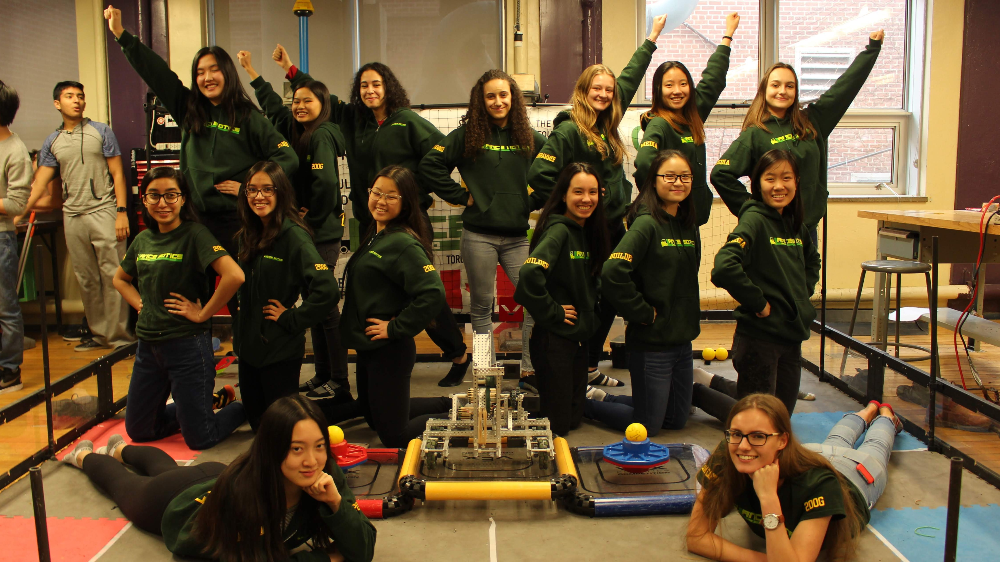

200G - The All-Girl Team
200G is LanceBotics' all-girls VEX Robotics team. Our team consists of 12
girls ranging from grades 10-12, all dedicated to immersing ourselves
within robotics, the VEX community, and the stressful but incredibly
rewarding competition VEX brings.
We are here to challenge the stigma around all-girls robotics teams. We
are here to demonstrate -- not only to the VEX community -- but to
ourselves that we are just as capable of working hard, learning lots,
and succeeding as a team. We are here to prove that our awards are not
the result of us being all-girls, but from our consistent dedication,
determination, and genuine desire to learn.
Change Up is 200G’s third year in VEX, with Turning Point being
our team’s rookie season. 200G all started with our original co-captains,
Sylvia Gehring and Crystal Jin. Both girls were involved in Lancebotics
and VEX for two years prior to the founding of 200G, but they both
became aware of something significant about robotics: there was an
incredibly disproportionate amount of males and females on the team,
and it was becoming more common for females to join the team, come for
a couple of build sessions, and quit. They came to the realization that
being a part of a co-ed team may feel especially daunting for girls who
had no prior experience in robotics, and that they may feel worried
about being judged by other team members for not understanding how VEX
works. This made sense to Sylvia and Crystal as to why after a couple
of build sessions, some girls may leave the team. After coming to this
understanding, they agreed to start a new all-girls team under the
Lancebotics organization, with the goal of providing an environment
where girls do not need to be worried about being judged for what they
do not understand and where girls may feel comfortable learning with
each other. So, 200G was born. Our journey during the Turning Point
season was a blast, from late night build sessions in Crystal’s basement
to ranking 15th as a rookie team at Ontario Provincials to receiving
the highest robot skills rank out of all four Lancebotics teams to
winning the design award, judges award, and build award. Turning Point
was an outstanding season that set the foundation for 200G’s VEX
journey. And now, we’re coming back for more. 200G is ready to take on the field for another
season. We are ready for another year of hard work, perseverance,
friendships, and tears, and we are ready to demonstrate to the world
what this all-girls team from Toronto is capable of.
Facts and Achievements
- Founded by Crystal Jin and Sylvia Gehring to promote girls in STEM in the Leaside Community
- Ranked 36th place in Robot Skills in the province in Tower Takeover
- Received the Create and Judges Awards during the Turning Point season
- Nominated for and receieved a sponsorship of $1000 from the Ontario Teachers Insurance Plan Sponsorship of School Projects and Initiatives
-
Helped organize
MeCh Savvy
 : a crash course robotics workshop in collaboration with the Canadian Association for Girls in Science
: a crash course robotics workshop in collaboration with the Canadian Association for Girls in Science
- Produced over 10 alumni in two seasons, all who pursued STEM or Business careers
- Received the Build award at the 2019 VEX Ontario Championship
- Founded in 2018, a team of all girls consisting of mostly rookie members who are eager to learn
Meet the Members
Laura Luong-Pires
Co-captain, Builder
Hi, my name is Laura and I'm currently in my fourth year of VEX Robotics as a builder, and my first as a co-captain. Aside from robotics, I enjoy playing video games, watching movies, skateboarding, karate and dance to list a few. I look forward to competing this year with my team and gain new experiences while having a great time!
Angel You
CaptainProgrammer, Builder
Hey, my name is Angel You and is my second year of VEX Robotics. I am both a builder and programmer on 200G, as well as a co-captain. Other than robotics, I am involved in rugby, lacrosse and fast pitch at school. Outside of school, I like to do karate, play music, take pictures and learn new languages. This season, I hope to simply enjoy Vex and make some memories with my friends :)
Alexis Andrysek
Programmer
Hey, my name is Alexis Andrysek, I am in grade 10 at LHS and this is my second year on the LanceBotics 200G team. My role on the team is programmer. Some other activities I participate in include piano, singing, rock climbing and skiing which I do outside of school. I also enjoy art and reading. My goal for this year is to learn how to build and code robots and pose as an asset to the team. I am excited for what this experience will bring, creating new memories and friends and what I will learn being a part of it!

Grace Campbell
Builder
Hi, my name is Grace, and I’m in grade 12 at Leaside. This is my second year in LanceBotics, and I’m a builder on 200G. Some other clubs I’m a part of include Law club, Arts council, and stage crew. This year I hope to learn more about building strategies, and get 200G to worlds!

Illiyana Iacono
Builder
Hi, my name is Iliyana and I’m in grade 10. My role on the team is builder. Besides robotics I enjoy listening to music, playing video games and watching movies. My goal for this year is to learn more about how to build robots and to be helpful to my team! The reason why I decided to join the team was because I have always been interested in robotics and when I was younger. I tried and failed multiple times to build a robot, so I hope this experience will help me!
Bella Ing
Builder
Hi, my name is Bella and I’m in grade 10 at Leaside Highschool. This is my second year on the LanceBotics 200G team. My role on the team is builder. Other than being robotics, I’m also on the Eco club and I play piano outside of school. My goal this year is to learn how robots work and how to build a robot from start to finish. I’m excited to be part of the team and make more memories!

Yena Jeung
Programmer
Hello, my name is Yena Jeung and I am a grade ten student at Leaside High School. I wanted to join robotics because I have always been very interested in this type of field. I was also partly inspired by my uncle who works as a computer engineering professor at a Korean university. As extracurricular activities, I play piano, flute and cello. I also like to read books. I guess my goal would be to experience this new environment and learn some things from it.

Alex Mohl
Programmer
Hello! My name is Alex Mohl and I’m in grade 12 at Leaside High School. This is my second year in VEX. I’m a programmer on 200G. Outside of robotics, I play hockey, badminton and rugby. I’m also the co-president of law club. This season, my goal is to learn more about programming and expand knowledge of coding. I’m super excited to be on 200G and can’t wait to meet new people and get this season started!
Savita Passi
Builder
Hey! My name is Savita Passi and I'm in grade 10 at Leaside High School. This is my second year in LanceBotics and I am very happy to be part of the 200G team! Other clubs I do outside of robotics are DECA, Bronze Medallion Swimming, Piano, Indian Classical Dance and Kumon. My goal for this year is to learn how to build a whole robot with minimal guidance. This way, I can test myself if I really understand how to be a builder!
Jaya Roy
Builder
Hey! My name is Jaya Roy, I am in grade 12 at Leaside High school and this is my third year on LanceBotics. I’m a builder on 200G. Apart from robotics, I am in stage crew, arts council, and law club. I hope to return to the track team this year! This season, my goal is to help my team get to worlds, and get the highest score in skills of all the LanceBotics teams. I’m excited to get this season started and see what we can accomplish!

Riley Vilis
Builder
Hi, my name is Riley and I’m in grade 10 at Leaside High School. This is my second year on LanceBotics and I am very excited! My role on the team is a builder and programmer. Outside of robotics I play basketball and swim. My goal for this year is to learn more about the process of building a robot from start to finish.

Sameen Yousuf
Engineering Notebook, Photographer, Writer
Hey, my name is Sameen Yousuf and this is my second year on the LanceBotics team. My role as a member in 200G is to document everything that goes on during meetings, team sessions and competitions in our engineering notebook. Outside of LanceBotics, I am the president of Leaside’s Arts Council, a junior editor in the school Chronicle, and a member of the Drama Club, Yearbook Committee, and Stage Crew. I joined LanceBotics as an attempt to try something new and be a part of something big. This year, I hope to help my team qualify for Worlds and make new friends along the way.

 YouTube
YouTube  Instagram
Instagram  Twitter
Twitter  Facebook
Facebook